Version 2. (2014)
- What is Math Graphica ?Math Graphica aims to be a very easy to use math software. The idea is for you to use it right away without having to read this manual, and yet, give you the flexibility and power to perform more sophisticated calculation in a very easy way.
Some features of Math Graphica: expression parser with real and complex numbers, trigonometric functions, 2D / 3D graphs, integrals and equation system.
Some conventions used by Math Graphica:
- Floating point numbers use the dot notation: 3.2 (correct)
not
the comma notation
3,2 (wrong)
- Imaginary numbers use the following notation: 2+3i (correct)
and
not
2+i3 (wrong)
-
Variables can be defined with letters, numbers and underscore character
'_' , but must always start with a letter. Can not be equal to
operators, variables or functions defined by Math Graphica:
x
(correct)
x2
(correct)
minha_variavel_2 (correct)
_x (wrong)
2variavel (wrong)
i (wrong) it's the imaginary number)
e (wrong, it't the Neper number)
E (wrong, é a operator )
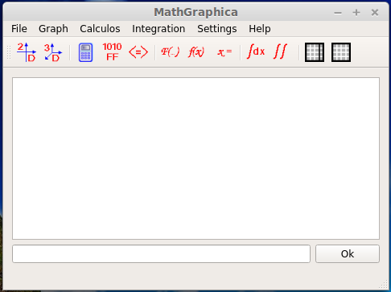


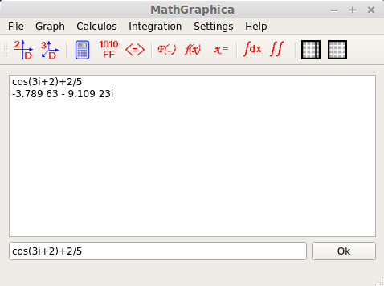
Math Graphica saves a list of all calculations. Just click to bring then to the command line, or double click them to open the calculator dialog.
You can navigate throw the command line and the calculation list with the Up, Down and Enter keys.
In the previous example, when calculating 'cos(3)+2/5' the result was '-3.789 63 - 9.109 23i'. We can format the result in mainwindow menu 'Settings' -> 'Output Format'
Functions / operators / constants available:
When writing a floting point number use '.' ( 3.2 ok) and not the ',' ( 3,2 wrong)
|
Constants |
|
|
pi |
Pi number, 3.1415... |
|
e |
Nepper number 2.71... (do not use 'E' ) |
|
i |
Imaginary number, use this notation: 2+3.2i do not use: 2+i3.2 |
|
Operators |
|
|
+ |
sum |
|
- |
subtration |
|
* |
multiplication |
|
/ |
division |
|
^ |
Power |
|
| |
Absolute value, e.g. |-10| = 10 (this is not a logical operator) |
|
E |
Same as *10^, example: 3E2 = 3*10^2 = 300 (do not use 'e' , 'e' is the Nepper number) |
|
Trigonometric functions |
|
|
sin, cos, tan, cotg, csc, sec |
Trigonometric |
|
asin, acos, atan, acotg, acsc, asec |
Inverse trigonometric |
|
sinh, cosh, tanh, cotgh, csch, sech |
hyperbolic |
|
asinh, acosh, atanh, acotgh, acsch, asech |
Hyperbolic inverse |
|
Other functions |
|
|
sqrt |
Square root |
|
log |
Natural logarithm |
|
ln |
Exponencial logarithm |
|
exp |
Exponencial, example: exp(3) |
|
sinc |
Sinc function, sinc(x) = sin(pi*x)/(pi*x) |
| real | real part of a complex number, i.e. real(3-2i) = 3 |
| imag | imaginary part of a complex number i. e. real (3-2i) = -2i |
| abs | Equal to the Absolute value, e.g. abs(-10) = 10 |
All functions are case insensitive, you can write cos(3) or Cos(3), except for 'e', the Nepper number wich is different from operator 'E'.


Just write any equation you like in the f(x) and g(x) edit boxes.
You can also use other variable different than 'x', just use 'y', or 'myvar1' the program Math Graphica will automatically detect the variable.
The 'min' and 'max' edit are the limits of the search interval, 'delta' is the step increment of the numeric algorithm, and 'precision' is the precision result. The default values will be ok for the must common situations.
The solution:
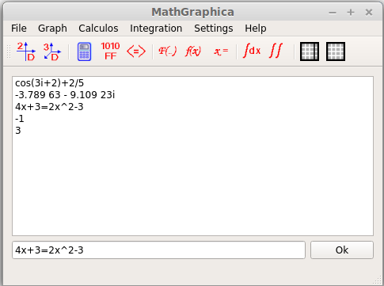
The program will automatically create a variable ''x' and, has in this case, of multiple solution, assign the last value ( x = 3 in this example). We'll see more about variable later in the 'command line' section.
Again, you wouldn't need to call the equation dialog, could just write it in the command line. The only thing about the dialog is that will give you more options (setting the search interval, precision and delta).
Also if you double click the equation in the mainwindow list, it will bring the equation dialog. If you double click the result t will bring the calculator dialog.
Please do not use equations like:
x=x+1
This is correct only in programming language where '=' is the assignement operator and 'x' is incremented one unit, but mathematically is a equation without solution.
If you do this, Math Graphica will not find a solution. Math Graphica uses a very fast, but experimental search algorithm, but this algorithm looses is speed when dealing with parallel expressions like 'x' and 'x+1' wich are parallel lines. As you probably noticed, Math Graphica solved the early equation 'x^2-4x=3x-2' in almost no time, searching in a interval of 120.000.000 (-1E6 to 1E6 using steps of 0.1). That´s very fast.

Notice you can use expressions like 'pi/2' in the integration intervals. Also if you don't remember all the available functions Math Graphica has to offer, just click in the f(x) button and it will open the calculator dialog where you can compose your function to integrate ( in this picture is 2*cos(x) ). 'm' is a quality factor, the higher the slower calculation will be, but you will get better accuracy. Actually 'm' is the number of intervals in the Simpson's composite numerical integration rule.

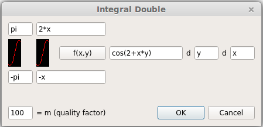
Also notice you can use expressions like '2*x' and '-x' in the limits of the inner integral. This is very useful. Again you can click the f(x,y) button to bring the calculator dialog to help you compose the integration expression.
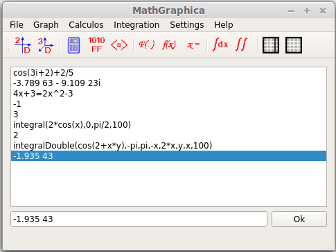
Please note that we could just have calculated the integrals directly in the command line.


As you notice by now, all dialog's have predefined values in the edit boxes, to help you fill more confortable in the first time you're using the program. So, we will just use the graph expression "cos(x)*sin(y)*cos(t)".
Please note that we must define the graph variables, x and y in this example. We could have used cos(u)*sin(v)*cis(t), we would just have to define the variables u, v in the variables line edits. The t variable it's a special variable that defines time, therefore does not need to be defined, and makes this a 4D graph (3 spacial dimensions x, y, z, plus a time dimension t).
Note also the graphs color buttons, that you can click to change the four predefined graph colors.
Clicking OK, we get the following picture.
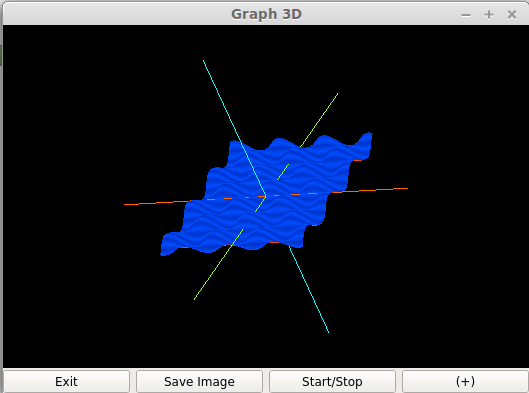
You can drag the graph with the mouse to do a 3D rotation, and you can zoom with the mouse wheel.
The 'Exit' button will, obviously, exit the graph window. 'Sabe Image' saves the graph as a png image file.
'Start/Stop' button will start/stop the 4D effect, the time variable will start being incremented and you will see a graph with a moving effect.
The button '(+)' will give you a new editor with more options:
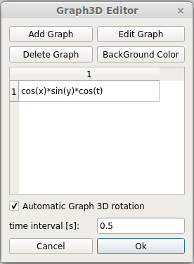
You can:
- create a new graph
- delete a graph from the list
- edit the graphs: press any graph of the list and click the button 'Edit Graph' or just double click the graph from the list
- change the background color
- change the automatic graph 3D rotation. If you have already drag the graph you have noticed, when you release the mouse button, the rotation doesn't terminate abruptly, but smoothly fades away. You can change this behaviour by unsetting this option and the rotation will immediately stop after the mouse button release.
- change the time interval increment of the time t variable that causes the graph to 4D movement effect. This will make the graph movement faster or slower.
You can also zoom the graph with the keyboard '+' and '-' (all axis) and with '1', '2', '3', '4', '5', '6' for zooming in out in the x, y, z axis.
Graph rotation also should work with '8', '9' and the arrows keys.
Next image show you the window with several graphs: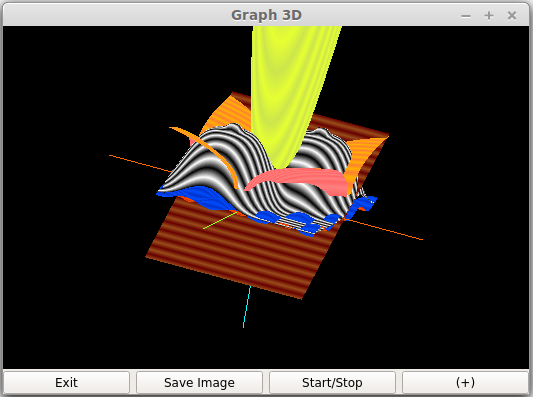

The graph 2D editor allows us to define the graph function, the graph limits ('-x and 'x'), the color, the 'dx' wich is the delta of the graph dots.
We can also define if the graph will be polar or cartesian with the checkbox.
The
variable 'x' does not need to be defined, MathGraphica will automatic
detect the variable name, you can use any other names like 'u',
'myVar'. The variable 't' also does not need to be defined, it's
automatic recognized as a time variable. So this will be a graph with
two spacial dimensions, x and y, and a time t dimension. This graphs have a beautifull animation effect as time t is being increment.
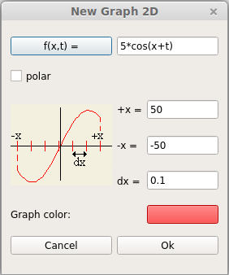
The '5*cos(x-t)' graph window:

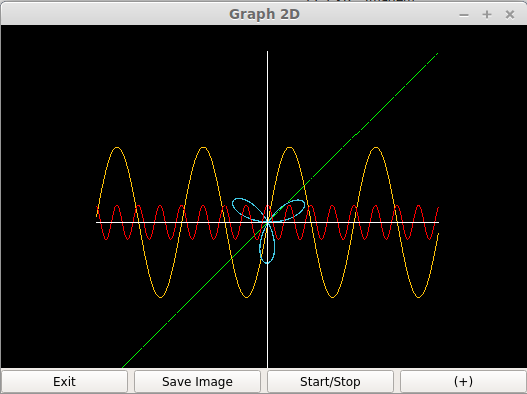

Just select the number of equations you want to calculate, then enter the values or if you want press the random button, that will generates numbers for your equation system. Then press solve, and there's your solution.
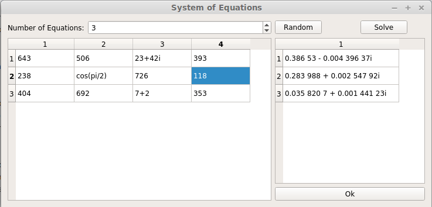
Note that you can use complex numbers and expression's in the equation system.
We can use the command line to create variables. Just type 'y=3.2' and we have a variable named y with value 3.2. Now you can define z = y+3, and we have a z variable with 6.2 value.
You also can type expressions like 'z+2*y' and Math Graphica will show you the result.
Also you can use names for variables like 'myvar2'. Remember it must start with a letter, then use letters, underscores and numbers.
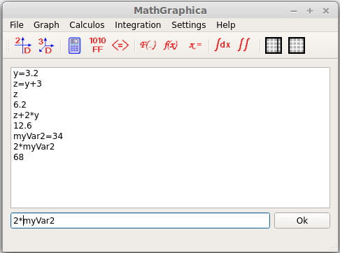
If you exit Math Graphica and start it again, it will retain the variables and their values, so you can use it again.


This is a very powerfull feature. You can define any formula you like and solve it just like that. There are already some predefined formulas, but you can add as many you like by clicking in the "New" button.
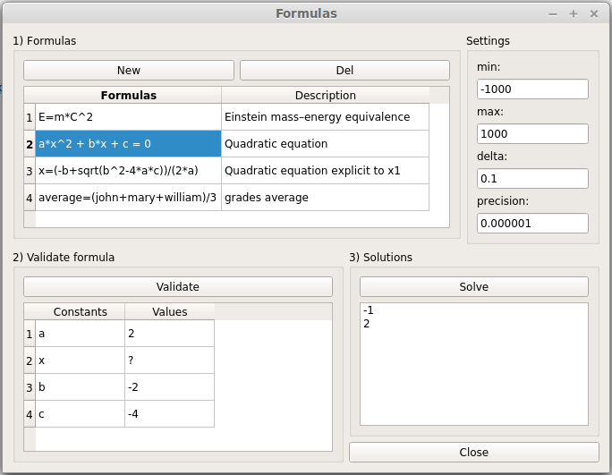
Selected the formula you want, and then press 'Validate'.
The list of 'Constans' will automatically be filled with the variables from the formula (in this example they are 'a', 'x', 'b' and 'c').
In this example we have choose formula 2), the quadratic equation, so we want to find 'x' and assign same values to 'a', 'b' and 'c'. The variable we want to find should always be assigned with '?'. If you double click on x, the value '?' will be automatic placed.
Now we just press 'Solve' and we have our solution (-1, 2).
MathGraphica however, cannot solve formulas with solutions that are complex imaginary numbers, so if we have choosen values like: a=2, b=2 and c=2, wich are complex roots, with would fail to find a solution. A workaround for this is to define a formula explicit to a variable, like formula number 3) wich is the first root of the quadratic equation. This will gives a solution even of it is a complex imaginary number.
The last formula, in row 4, calculates the average value of the grades of 3 students. Look how versatile this is, we can actually name variables like 'average', 'mary', 'john' and 'william'.
The 'min' and 'max' fields define the range of values from wich the solutions will be searched. 'delta' is the small interval from wich MathGraphica searches the solutions and 'precision' is exactly that, the precision or acuracy we will get in the solutions. You can alter this pre defined values, but they will be ok for the most situations.
All formulas and values assigned to the variables are saved between sessions of Math graphica.